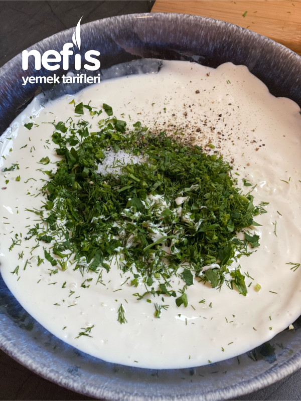
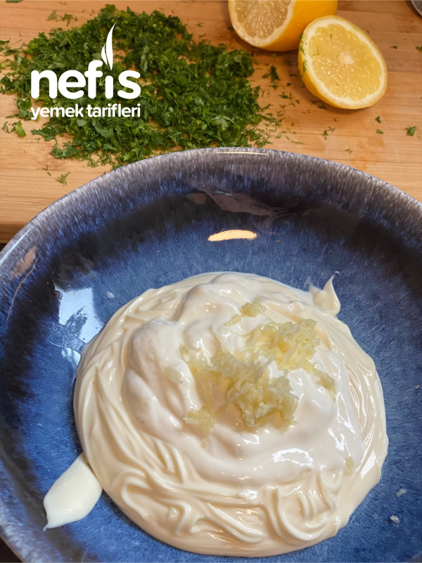
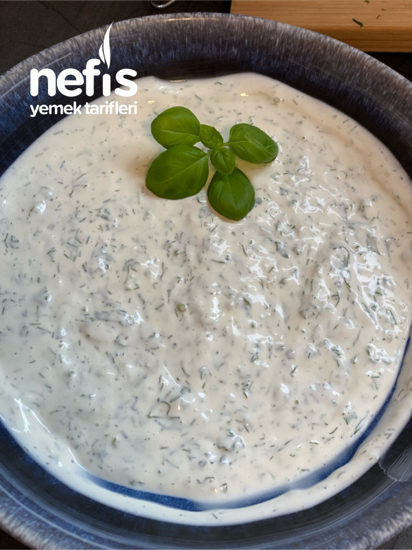

Anasayfaya Dön
Çıtır Patates Eşliğinde Ev Yapımı Ranch Sos Tarifi
Çıtır Patates Eşliğinde Ev Yapımı Ranch Sos Tarifi İçin Malzemeler
- 6 yemek kaşığı mayonez
- 1 silme çay kaşığı tuz
- 3 yemek kaşığı yoğurt (koyu)
- 2 diş rendelenmiş sarımsak
- 1 çay kaşığı kırmızı toz biber
- 4 dal taze dereotu
- 4 dal maydanoz
- 4 adet fesleğen yaprağı
- 1 tatlı kaşığı limon suyu
- 1 silme çay kaşığı tuz
Çıtır Patates Eşliğinde Ev Yapımı Ranch Sos Tarifi Nasıl Yapılır?
- Dereotu, maydanoz ve fesleğen ince ince kıyılır.
- Sarımsak rendelenir.
- Uygun bir kaseye yoğurt, mayonez, tuz ve karabiber alınır. Güzelce karıştılır.
- En son taze otları ve limon suyu ilave edilir ve karıştırılır. Taze yoksa kurusuda olur 👍.
Çıtır Patates Eşliğinde Ev Yapımı Ranch Sos Tarifi Fotoğraflı Yapılışı
>


